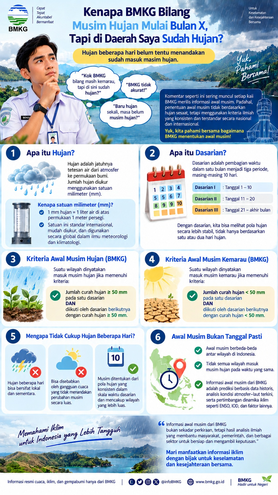

🌧️
“Di sini sudah hujan.”
Benar—dan hujan tersebut tetap merupakan kejadian hujan. Namun satu atau beberapa kejadian hujan belum cukup untuk mendefinisikan perubahan musim.
Belum tentu. Hujan yang terjadi di suatu wilayah dan penetapan awal musim hujan adalah dua hal yang berbeda.
Curah hujan per dasarian adalah salah satu bagian penting dalam penentuan awal musim.
Hujan dapat terjadi secara lokal dan sementara, sementara penetapan awal musim melihat pola curah hujan dalam skala waktu dasarian dan memenuhi kriteria tertentu.
Benar—dan hujan tersebut tetap merupakan kejadian hujan. Namun satu atau beberapa kejadian hujan belum cukup untuk mendefinisikan perubahan musim.
BMKG menggunakan dasarian, yaitu periode sekitar 10 hari, untuk melihat pola curah hujan secara lebih konsisten.
Awal musim hujan ditetapkan dari pola curah hujan ≥50 mm per dasarian beserta kondisi pada dasarian berikutnya—bukan hanya dari satu hujan lebat.
Menurut pedoman BMKG, penentuan awal musim menggunakan jumlah curah hujan dalam satu dasarian dan melihat dua dasarian berikutnya.
Dasarian pertama ≥ 50 mm dan diikuti dua dasarian berikutnya yang juga ≥ 50 mm.
Dasarian pertama ≥ 50 mm, salah satu dari dua dasarian berikutnya <50 mm, tetapi total tiga dasarian ≥150 mm.
Dasarian pertama < 50 mm dan diikuti dua dasarian berikutnya yang juga < 50 mm.
Dasarian pertama < 50 mm, salah satu dari dua dasarian berikutnya ≥50 mm, tetapi total tiga dasarian <150 mm.
Hujan yang turun sesekali belum tentu menunjukkan perubahan pola yang bertahan. Untuk kebutuhan pertanian, sumber daya air, pengelolaan risiko, dan berbagai aktivitas masyarakat, yang penting bukan hanya apakah hujan terjadi, tetapi juga bagaimana pola hujan berkembang dari waktu ke waktu.
Karena itu, lebih tepat mengatakan bahwa hujan yang belum memenuhi kriteria awal musim belum menunjukkan perubahan pola musim secara klimatologis. Dampaknya terhadap debit sungai, tampungan, tanah, dan ketersediaan air juga tidak dapat disimpulkan hanya dari satu-dua kejadian hujan.
Satu bulan dibagi menjadi tiga dasarian agar pola hujan dapat dibaca secara konsisten.
Curah hujan dinyatakan sebagai tinggi air yang terkumpul di permukaan datar; 1 mm hujan setara dengan 1 liter air per meter persegi.
Silakan lihat, simpan, dan bagikan materi ini secara utuh agar konteks dan sumber informasinya tetap terbawa.

Versi besar adalah hasil pembesaran dari master gambar yang tersedia; untuk kebutuhan cetak profesional, kualitas akhir sebaiknya disesuaikan lagi dengan ukuran fisik dan standar percetakan.
Materi ini merupakan halaman edukasi yang dibuat untuk membantu publik memahami konsep awal musim berdasarkan informasi BMKG. Bukan halaman resmi BMKG. Jika materi atau identitas BMKG digunakan dalam publikasi ulang, perhatikan ketentuan penggunaan dan atribusi BMKG.
{kind=link}
{kind=link}